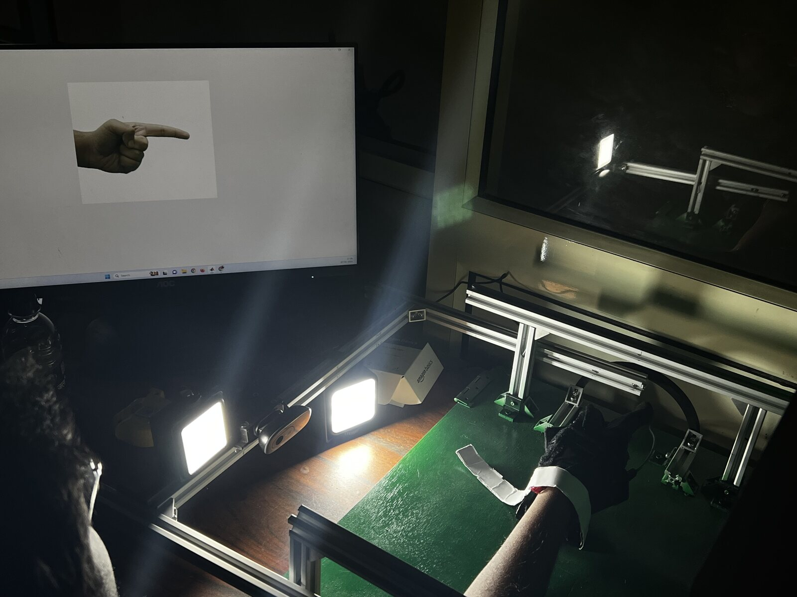
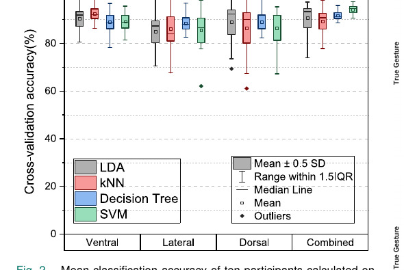
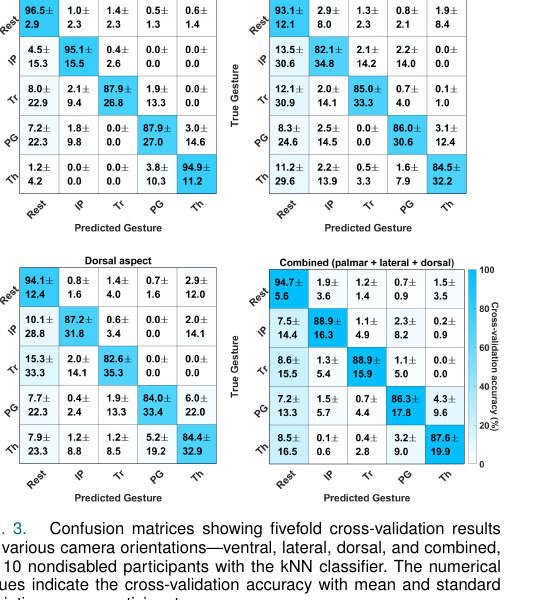

Markerless Optical Myography
Non-contact bionic control of multiple degrees of freedom

◇ PROBLEM
EMG electrodes for prosthetic control need skin contact, conductive gel and precise placement, and they degrade with sweat, shift and motion — which limits reliable control of multiple degrees of freedom.
◈ SOLUTION
A markerless, non-contact optical myography approach that reads muscle-surface deformation with a camera and decodes intended movement with machine learning — no electrodes, no gel, no fixed markers.
OVERVIEW
The system observes the optical signature of contracting muscle and maps it to intended motion, replacing the electrode interface with a vision sensor. I contributed to the machine-learning strategy, prototyping, experimentation and model evaluation.
On control-related classification tasks the approach reached roughly ninety-five percent accuracy across multiple degrees of freedom, supporting its promise as a robust, contact-free front end for bionic and prosthetic control.
KEY POINTS
- Contact-free interface — no electrodes, gel or skin markers.
- Decodes multiple degrees of freedom for bionic control.
- High classification accuracy on control-related tasks.
- Contributed ML strategy, prototyping and model evaluation.
GALLERY


STACK & TOOLS
◆ Publication (2024): “Towards Markerless, Non-Contact Optical Myography for Prosthetic Control of Multiple Degrees-of-Freedom.” · IIT Delhi, RISE Lab.